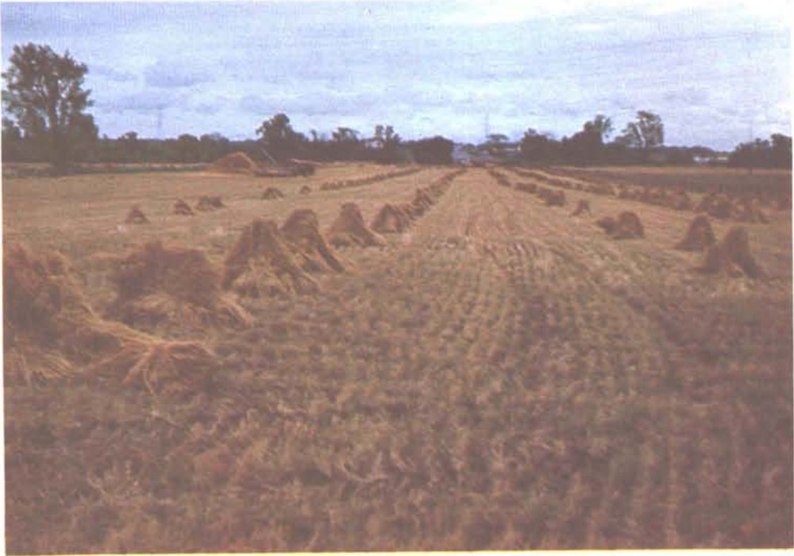
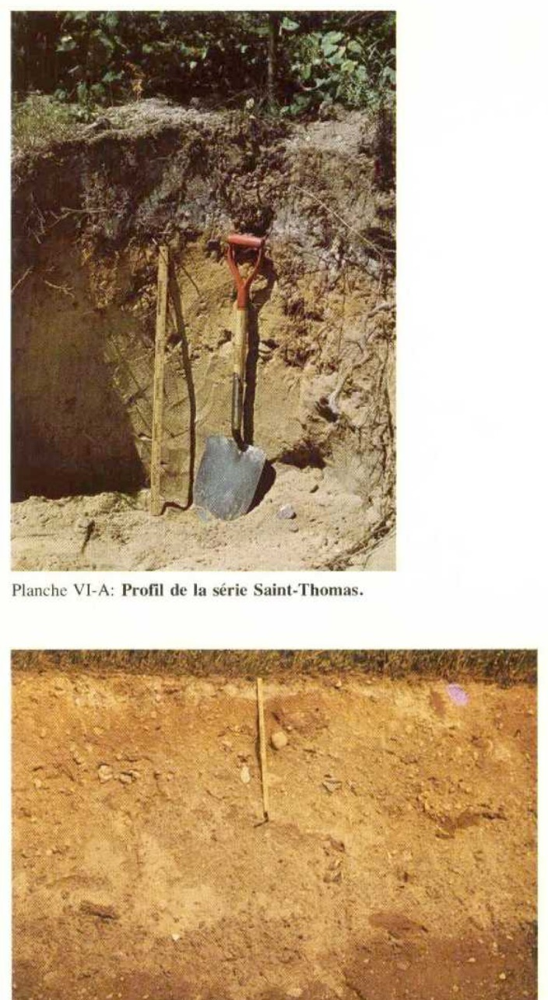
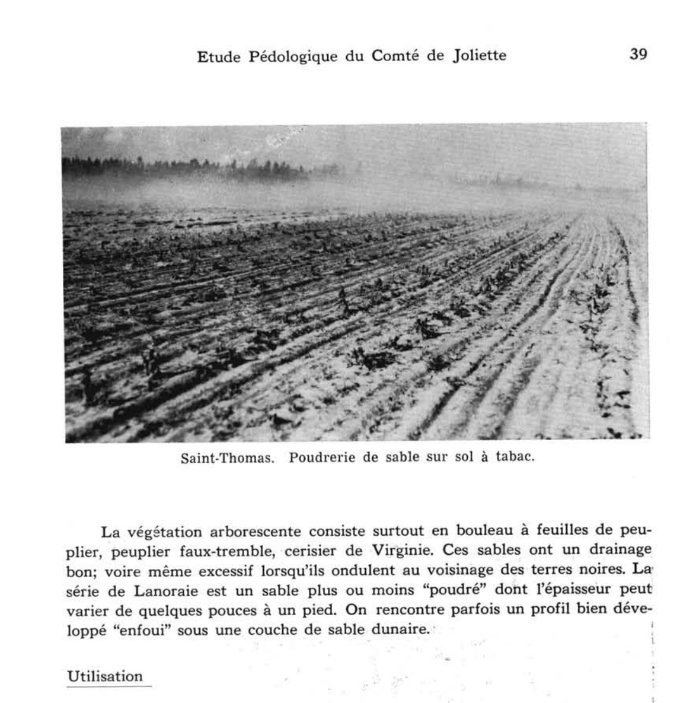
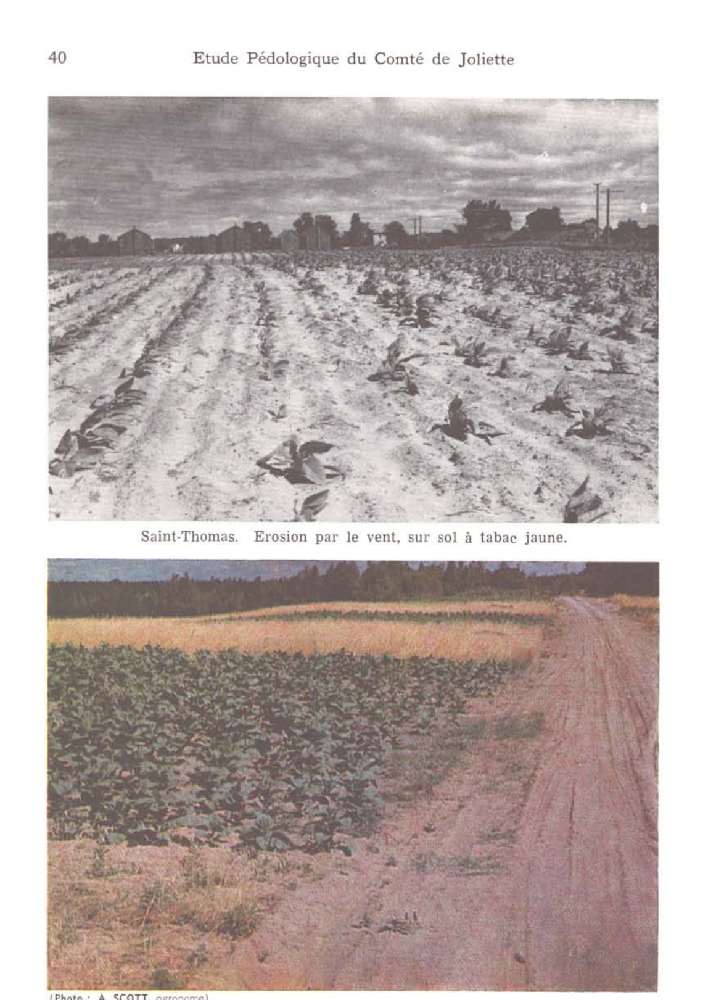
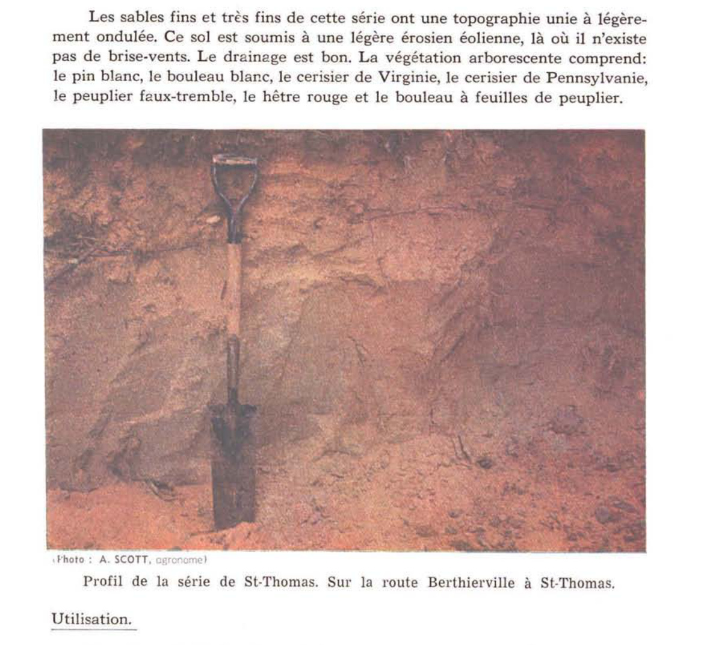
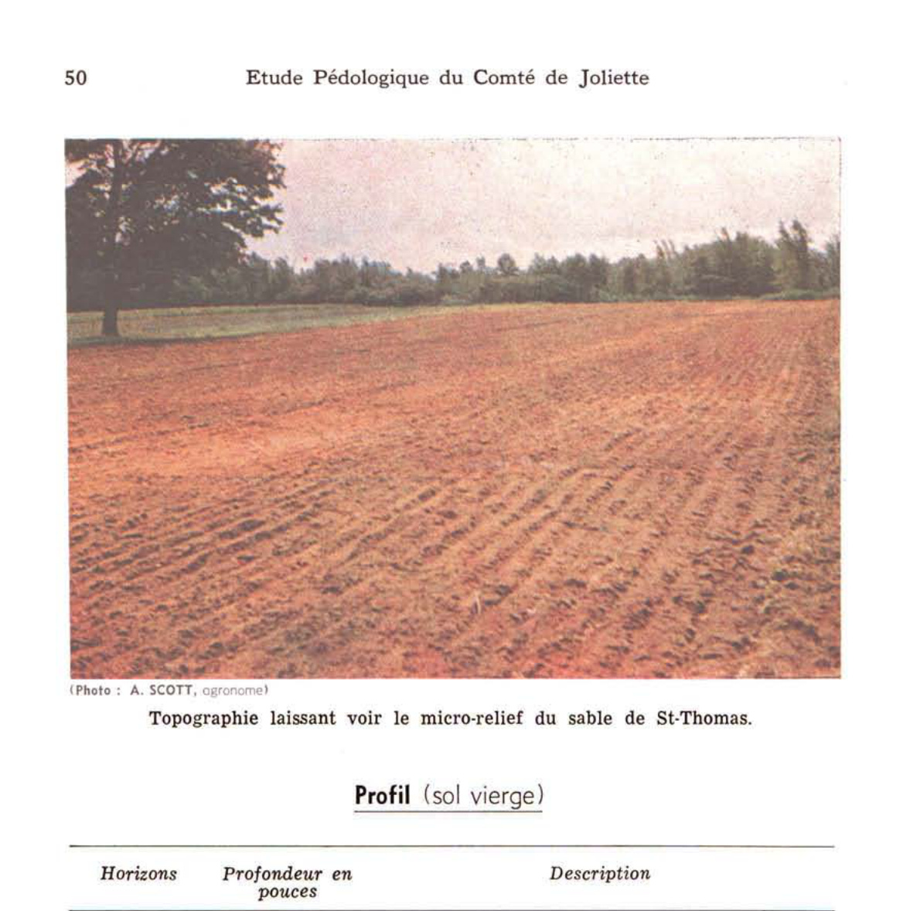

Identification & Caractéristiques Générales
La série Saint-Thomas s'est développée sur des dépôts meubles constitués de sables fluvio-deltaïques ou éoliens fins à très fins, dont la fraction sableuse fine et très fine excède 80 p. 100. Ces matériaux parentaux sableux forment une couverture épaisse, généralement supérieure à deux mètres, qui repose sur un substratum d'argile marine imperméable. Sur le plan géomorphologique, ces sols occupent des terrains plats à légèrement ondulés, caractérisés par des pentes variant de 1 à 8 %, ainsi que des terrasses, des rebords d'escarpements et des pourtours de ravins et de talus. Cette position topographique favorise un écoulement de surface rapide.
Le profil pédologique se caractérise par un drainage naturel excessif et une perméabilité interne modérée à élevée. L'eau de pluie s'infiltre rapidement à travers la masse sableuse en profondeur, échappant promptement à la zone racinaire, bien que la capacité de rétention en eau soit légèrement supérieure à celle des sables de la série Uplands. Une nappe d'eau temporaire peut s'établir au-dessus du substratum argileux imperméable, provoquant une migration latérale vers les dépressions. Le sol présente une texture de sable très fin, est totalement exempt de pierres et montre une réaction fortement acide, notamment dans les horizons de surface et organiques sous couvert forestier.
Sur le plan agronomique, ces sols sont affectés par une susceptibilité élevée à la sécheresse estivale et un risque marqué d'érosion éolienne en raison de la finesse des particules sableuses. Une part importante des superficies demeure sous couvert forestier, dominé par le pin, le bouleau, le chêne et le hêtre. Les secteurs mis en valeur sont affectés aux cultures maraîchères, à la pomme de terre, aux cultures de diversification telles que le tabac, ainsi qu'à la production de récoltes-argent. La mise en culture requiert obligatoirement l'implantation de brise-vent pour contrer l'érosion éolienne, des apports réguliers de matière organique et d'engrais minéraux complets, le recours fréquent à l'enfouissement d'engrais verts, des chaulages correctifs pour neutraliser l'acidité, ainsi que l'installation de systèmes d'irrigation pour pallier les déficits hydriques périodiques.
Caractères Distinctifs & Morphologie Génétique (Comté de Dorchester — Page 35)
- Topographie : légèrement ondulée
- Drainage : bon à excessif
- Pierrosité : nulle — 0
- Grand-groupe génétique : podzol
- Degré d'érosion : érosion éolienne légère (D1)
- Classes d'utilisation : (C) 3F (Q) 2b
- Association géographique : Achigan
- Végétation naturelle : peupliers, faux-trembles, bouleaux, sapins
Classification Taxonomique & Environnement Pédologique
| Ordre Pédologique | Podzolique |
|---|---|
| Grand Groupe (SCSS) | Podzol humo-ferrique |
| Sous-Groupe Taxonomique | Podzol humo-ferrique orthique |
| Famille Pédologique | Sableuse, mixte sableux, acide |
| Mode de Dépôt Parental | Fluviatile |
| Classe de Drainage Naturel | Bien drainé |
| Régime Thermique & Humidité | Frais / Subhumide |
Description Morphologique du Profil Type
Séquences génétiques des horizons pédologiques caractérisant le profil type représentatif de la série Saint-Thomas :
Profil cultivé (agricole) — Comté de Champlain
✓ Source : Comté de Champlain — Page 45Couleur Munsell : 5YR 4/4
Structure & Consistance : Granulaire
Description morphologique : Sable fin brun rouge à brun rouge foncé (5YR 4/4 – 4/3); structure granulaire; pH : 5.0.
Couleur Munsell : 5YR 7/1
Structure & Consistance : Polyédrique à granulaire
Description morphologique : Sable fin gris rose (5YR 7/1); observé à la surface du labour.
Couleur Munsell : 5YR 4/4
Structure & Consistance : Polyédrique à granulaire
Description morphologique : Sable fin brun rouge à rouge jaune (5YR 4/4 – 4/8); pH : 5.2.
Couleur Munsell : 7.5YR 6/8
Structure & Consistance : Polyédrique à granulaire
Description morphologique : Sable très fin jaune rouge (7.5YR 6/8); contient souvent des lits de limon; pH : 4.8.
Couleur Munsell : 7.5YR 7/6, 10YR 6/3
Structure & Consistance : Polyédrique à granulaire
Description morphologique : Sable fin jaune rouge à brun pâle (7.5YR 7/6 – 10YR 6/3); pH : 4.9.
Profil cultivé (agricole) — Comté de Dorchester
✓ Source : Comté de Dorchester — Page 35Couleur Munsell : 7.5YR 4/2
Structure & Consistance : Polyédrique à granulaire
Description morphologique : Sable fin brun foncé (7.5YR 4/2); sans structure; très friable; très perméable; pH: 4.9 — 5.5.
Couleur Munsell : 5YR 3/3
Structure & Consistance : Polyédrique à granulaire
Description morphologique : Sable fin brun-rouge foncé (5YR 3/3); sans structure; très friable; très perméable; pH: 5.1 — 5.7.
Couleur Munsell : 10YR 5/6
Structure & Consistance : Polyédrique à granulaire
Description morphologique : Sable fin brun-jaune (10YR 5/6); sans structure; très friable; très perméable; pH: 5.2 — 5.8
Couleur Munsell : 5YR 6/6
Structure & Consistance : Polyédrique à granulaire
Description morphologique : Sable fin jaune-olive (5YR 6/6); sans structure; très friable; très perméable; pH: 5.5 — 6.1.
Couleur Munsell : 5Y 7/4
Structure & Consistance : Polyédrique à granulaire
Description morphologique : Sable fin jaune pâle (5Y 7/4); sans structure; très friable; très perméable; pH: 5.7 — 6.3.
Profil forestier (sous boisé) — Comté de Argenteuil
✓ Source : Comté de Argenteuil — Page 71Couleur Munsell : Non précisée
Structure & Consistance : Polyédrique à granulaire
Description morphologique : Sable très fin brun rougeâtre foncé, sans structure, poreux et friable; pH 5.0-5.8.
Couleur Munsell : Non précisée
Structure & Consistance : Polyédrique à granulaire
Description morphologique : Des restes de couches grises lessivées peuvent s'observer occasionnellement sous la surface cultivée.
Couleur Munsell : Non précisée
Structure & Consistance : Polyédrique à granulaire
Description morphologique : Sable limoneux très fin brun rougeâtre, sans structure, et meuble.
Couleur Munsell : Non précisée
Structure & Consistance : Polyédrique à granulaire
Description morphologique : Sable très fin brun foncé, sans structure, et meuble; pH 5.2-5.8.
Couleur Munsell : Non précisée
Structure & Consistance : Polyédrique à granulaire
Description morphologique : Sable très fin brun jaunâtre, sans structure, et meuble.
Couleur Munsell : Non précisée
Structure & Consistance : Polyédrique à granulaire
Description morphologique : Sable très fin brun jaunâtre clair, sans structure, et meuble; assez ferme par endroits.
Couleur Munsell : Non précisée
Structure & Consistance : Polyédrique à granulaire
Description morphologique : Sable fin brun pâle, sans structure; assez ferme par endroits; pH 5.7-6.7.
Profil forestier (sous boisé) — Comté de Gatineau
✓ Source : Comté de Gatineau — Page 64Couleur Munsell : 5YR 3/3
Structure & Consistance : Monogranulaire
Description morphologique : Sable fin à très fin, brun rougeâtre foncé (5YR 3/3); structure monogranulaire; très friable et très perméable; pH 5.0 à 5.8.
Couleur Munsell : 5YR 4/3
Structure & Consistance : Monogranulaire
Description morphologique : Sable loameux ou sable fin à très fin, brun rougeâtre (5YR 4/3); structure monogranulaire; très perméable; pH 5.0 à 5.8.
Couleur Munsell : 7.5YR 5/8
Structure & Consistance : Monogranulaire
Description morphologique : Sable loameux ou sable fin à très fin brun vif (7.5YR 5/8); structure monogranulaire; très perméable; pH 5.2 à 5.8.
Couleur Munsell : 10YR 5/8
Structure & Consistance : Monogranulaire
Description morphologique : Sable fin ou sable très fin brun jaunâtre (10YR 5/8); structure monogranulaire; très perméable.
Couleur Munsell : 10YR 6/4
Structure & Consistance : Monogranulaire
Description morphologique : Sable très fin brun jaunâtre pâle (10YR 6/4); structure monogranulaire; légèrement ferme.
Couleur Munsell : 10YR 6/3
Structure & Consistance : Monogranulaire
Description morphologique : Sable fin et très fin brun pâle (10YR 6/3); structure monogranulaire; matériel sur place un peu ferme, mais très perméable; pH 5.7 à 6.7.
Profil forestier (sous boisé) — Comté de Hull
✓ Source : Comté de Hull — Page 72Couleur Munsell : 5YR 3/3
Structure & Consistance : Monosgranulaire
Description morphologique : Sable fin à très fin, brun rougeâtre foncé (5YR 3/3); structure monosgranulaire; très friable et très perméable; pH 5.0 à 5.8.
Couleur Munsell : 5YR 4/3
Structure & Consistance : Monosgranulaire
Description morphologique : Sable loameux ou sable fin à très fin, brun rougeâtre (5YR 4/3); structure monosgranulaire; très perméable; pH 5.0 à 5.8.
Couleur Munsell : 7.5YR 5/8
Structure & Consistance : Monosgranulaire très perméable
Description morphologique : Sable loameux ou sable fin à très fin, brun vif (7.5YR 5/8); structure monosgranulaire très perméable; pH 5.2 à 5.8.
Couleur Munsell : 10YR 5/8
Structure & Consistance : Monosgranulaire
Description morphologique : Sable fin ou sable très fin, brun jaunâtre (10YR 5/8); structure monosgranulaire; très perméable.
Couleur Munsell : 10YR 6/4
Structure & Consistance : Monosgranulaire
Description morphologique : Sable très fin, brun jaunâtre pâle (10YR 6/4); structure monosgranulaire; légèrement ferme.
Couleur Munsell : 10YR 6/3
Structure & Consistance : Monosgranulaire
Description morphologique : Sable fin et très fin, brun pâle (10YR 6/3); structure monosgranulaire; matériel sur place un peu ferme, mais très perméable; pH 5.7 à 6.7.
Profil naturel (vierge) — Comté de Joliette
✓ Source : Comté de Joliette — Page 49Couleur Munsell : 5YR 3/1
Structure & Consistance : Polyédrique à granulaire
Description morphologique : Sable fin à très fin, sans structure, noir (5YR 3/1), meuble. pH: 6.0.
Couleur Munsell : 7.5YR 4/2
Structure & Consistance : Polyédrique à granulaire
Description morphologique : Sable loameux, sans structure, brun foncé (7.5YR 4/2), meuble. pH: 5.4.
Couleur Munsell : 5YR 5/1
Structure & Consistance : Polyédrique à granulaire
Description morphologique : Sable fin à très fin, sans structure, gris clair (5YR 5/1), meuble. pH: 6.0.
Couleur Munsell : 5YR 3/4
Structure & Consistance : Polyédrique à granulaire
Description morphologique : Sable fin à très fin, sans structure, brun rouge foncé (5YR 3/4), avec un peu d'orstein, légèrement cimenté. pH: 5.3 – 5.9.
Couleur Munsell : 10YR 5/6
Structure & Consistance : Polyédrique à granulaire
Description morphologique : Sable fin à très fin, sans structure, brun jaune (10YR 5/6), meuble. pH: 6.0.
Couleur Munsell : 2.5YR 6/4
Structure & Consistance : Polyédrique à granulaire
Description morphologique : Sable fin à très fin, sans structure, jaune olive (2.5YR 6/4), meuble. pH: 6.1.
Couleur Munsell : 5Y 6/4
Structure & Consistance : Polyédrique à granulaire
Description morphologique : Sable fin à très fin, sans structure, olive pâle (5Y 6/4), meuble. pH: 6.6.
Profil cultivé (agricole) — Comté de L'assomption
✓ Source : Comté de L'assomption — Page 61Couleur Munsell : 5YR 3/3
Structure & Consistance : Granuleuse très fine
Description morphologique : Sable très fin ou sable loameux fin, brun rougeâtre très foncé (5YR 3/3); structure granuleuse très fine; très friable; très perméable; pH 5.1 à 6.1.
Couleur Munsell : 5YR 4/3
Structure & Consistance : Monogranulaire
Description morphologique : Sable très fin ou sable loameux fin brun rougeâtre (5YR 4/3); structure monogranulaire; lâche.
Couleur Munsell : 7.5YR 5/8
Structure & Consistance : Monogranulaire
Description morphologique : Sable très fin rouge jaunâtre (7.5YR 5/8); structure monogranulaire; lâche; pH 5.1 à 6.1.
Couleur Munsell : 10YR 5/8
Structure & Consistance : Polyédrique à granulaire
Description morphologique : Sable très fin brun jaunâtre (10YR 5/8); monogranulaire; lâche.
Couleur Munsell : 10YR 6/4
Structure & Consistance : Polyédrique à granulaire
Description morphologique : Sable très fin brun jaunâtre pâle (10YR 6/4); légèrement ferme.
Couleur Munsell : Non précisée
Structure & Consistance : Polyédrique à granulaire
Description morphologique : Sable fin ou très fin brun pâle; légèrement ferme en place.
Profil cultivé (agricole) — Comté de Portneuf
✓ Source : Comté de Portneuf — Page 71Couleur Munsell : 5YR 4/4, 10YR 5/3
Structure & Consistance : Polyédrique à granulaire
Description morphologique : Sable loameux brun-rouge (5YR 4/4 h), brun (10YR 5/3 s) ; particulaire ; meuble ; racines peu abondantes, microscopiques et très fines, non-orientées ; limite distincte, régulière ; horizon éolisé et/ou ensablé ; pH : 5.7.
Couleur Munsell : 5YR 4/4, 10YR 5/3
Structure & Consistance : Polyédrique à granulaire
Description morphologique : Sable brun-rouge (5YR 4/4 h), brun (10YR 5/3 s) ; particulaire ; meuble ; racines très peu abondantes, microscopiques, non-orientées ; limite abrupte, régulière ; pH : 5.4.
Couleur Munsell : 7.5YR 6/8, 2.5Y 6/4
Structure & Consistance : Polyédrique à granulaire
Description morphologique : Sable jaune-rouge (7.5YR 6/8 h), brun-jaune clair (2.5Y 6/4 s) ; particulaire ; meuble ; limite distincte, régulière ; pH : 5.6.
Couleur Munsell : 10YR 5/6, 2.5Y 6/4
Structure & Consistance : Polyédrique à granulaire
Description morphologique : Loam sableux fin brun-jaune (10YR 5/6 h), brun-jaune clair (2.5Y 6/4 s) ; particulaire ; très friable ; limite abrupte, régulière ; pH : 5.5.
Couleur Munsell : 10YR 5/6, 10YR 7/1, 7.5R 6/8
Structure & Consistance : Polyédrique à granulaire
Description morphologique : Sable brun-jaune (10YR 5/6 h), gris clair (10YR 7/1 s) ; taches jaune-rouge (7.5R 6/8 h) peu nombreuses, petites, distinctes ; particulaire ; meuble ; pH : 5.2.
Profil cultivé (agricole) — Comté de Portneuf
✓ Source : Comté de Portneuf — Page 72Couleur Munsell : 10YR 3/4, 10YR 4/3
Structure & Consistance : Polyédrique à granulaire
Description morphologique : Sable loameux brun-jaune foncé (10YR 3/4 h), brun foncé (10YR 4/3 s) ; granulaire, très fine, très faible ; très friable ; racines abondantes, grossières, obliques, exo-agrégats ; racines très abondantes, fines à microscopiques, non-orientées, exo-agrégats ; limite distincte, régulière ; pH : 5.0.
Couleur Munsell : 5YR 6/1, 10YR 6/1
Structure & Consistance : Polyédrique à granulaire
Description morphologique : Sable gris (5YR 6/1 h, 10YR 6/1 s) ; particulaire ; meuble ; racines abondantes, grossières, obliques, exo-agrégats ; racines très abondantes, fines à microscopiques, non-orientées, exo-agrégats ; limite abrupte, interrompue ; pH : 4.6.
Couleur Munsell : 10YR 4/4, 2.5YR 3/4, 5YR 3/3
Structure & Consistance : Polyédrique à granulaire
Description morphologique : Sable brun-rouge foncé (5YR 3/3 à 3/4 h), brun-jaune foncé (10YR 4/4 s) ; particulaire ; meuble ; racines peu abondantes, fines à microscopiques, non-orientées, exo-agrégats ; concrétions brun-rouge foncé (2.5YR 3/4 h) abondantes, irrégulières, moyennes, locales ; limite distincte, ondulée ; pH : 4.9.
Couleur Munsell : 7.5YR 5/8, 10YR 5/6, 2.5YR 3/6
Structure & Consistance : Polyédrique à granulaire
Description morphologique : Sable brun vif (7.5YR 5/8 h), brun-jaune (10YR 5/6 s) ; particulaire ; meuble ; racines peu abondantes dans la partie supérieure de l'horizon Bf et très peu abondantes dans sa partie inférieure, fines et microscopiques, verticales, exo-agrégats ; concrétions rouge foncé (2.5YR 3/6 h) abondantes, irrégulières, moyennes, locales ; limite distincte, ondulée ; pH : 5.2.
Couleur Munsell : 7.5YR 6/6, 10YR 5/8, 2.5YR 4/6
Structure & Consistance : Polyédrique à granulaire
Description morphologique : Sable fin jaune-rouge (7.5 YR 6/6 h), brun-jaune à jaune-brun (10YR 5/8 à 6/6 s) ; particulaire ; meuble ; concrétions rouges (2.5YR 4/6 à 4/8 h) abondantes, moyennes, en bandes dans la matrice ; limite graduelle, ondulée ; pH : 5.2.
Couleur Munsell : 10YR 6/3, 2.5Y 6/4
Structure & Consistance : Polyédrique à granulaire
Description morphologique : Sable brun pâle (10YR 6/3 h), brun-jaune clair (2.5Y 6/4 s) ; particulaire ; meuble ; pH : 5.5.
Profil cultivé (agricole) — Comté de Saint-hyacinthe
✓ Source : Comté de Saint-hyacinthe — Page 102Couleur Munsell : Non précisée
Structure & Consistance : Polyédrique à granulaire
Description morphologique : Litière et matériau organiques constitués d'aiguilles, de feuilles, de brindilles et de tiges, peu à très décomposés; racines, très nombreuses, fines et moyennes, horizontales; limite nette, régulière; réaction extrêmement acide.
Couleur Munsell : 10YR 4/2
Structure & Consistance : Granulaire
Description morphologique : Loam sableux fin; brun grisâtre foncé (10YR 4/2); structure granulaire, fine, peu développée; constance meuble; très poreux; racines, très nombreuses, fines, horizontales; limite abrupte, régulière; réaction extrêmement acide.
Couleur Munsell : 5YR 4/6
Structure & Consistance : Polyédrique à granulaire
Description morphologique : Sable fin loameux; brun vif (7,5YR 4/6); particulaire; consistance meuble; très poreux; racines, très nombreuses, moyennes et fines, horizontales; limite nette, régulière; réaction très fortement acide.
Couleur Munsell : 10YR 4/6
Structure & Consistance : Polyédrique à granulaire
Description morphologique : Sable fin loameux; brun jaunâtre foncé (10YR 4/6); particulaire; consistance meuble; très poreux; racines, peu nombreuses, fines et moyennes, horizontales; limite nette, régulière; réaction fortement acide.
Couleur Munsell : Non précisée
Structure & Consistance : Polyédrique à granulaire
Description morphologique : Sable très fin loameux; brun jaunâtre (10YR 5,5/6); particulaire; consistance meuble; très poreux; racines, peu nombreuses, moyennes et fines, horizontales; limite nette, ondulée; réaction fortement acide.
Profil représentatif — Comté de Trois-rivières
✓ Source : Comté de Trois-rivières — Page 34Couleur Munsell : 10Y 3/1
Structure & Consistance : Polyédrique à granulaire
Description morphologique : Sable fin, sans structure, gris rouge foncé (10Y 3/1), meuble; pH : 5.4.
Couleur Munsell : 5YR 4/8
Structure & Consistance : Polyédrique à granulaire
Description morphologique : Sable fin, sans structure, rouge jaune (5YR 4/8), meuble; pH : 5.8.
Couleur Munsell : 10YR 6/8
Structure & Consistance : Polyédrique à granulaire
Description morphologique : Sable fin, sans structure, jaune brun (10YR 6/8), meuble; pH : 5.8.
Couleur Munsell : 2.5Y 7/4
Structure & Consistance : Polyédrique à granulaire
Description morphologique : Sable fin, sans structure, jaune pâle (2.5Y 7/4), ferme; pH: 6.0.
Profil forestier (sous boisé) — Comté de Verchères
✓ Source : Comté de Verchères — Page 105Couleur Munsell : Non précisée
Structure & Consistance : Polyédrique à granulaire
Description morphologique : Litière et matériau organique constitués d'aiguilles, de tiges et de brindilles, peu décomposés; racines très nombreuses, fines et moyennes, horizontales, limite abrupte, régulière; réaction très fortement acide.
Couleur Munsell : 10YR 2/1
Structure & Consistance : Granulaire
Description morphologique : Sable fin loameux; noir (10YR 2/1); structure granulaire, fine, peu développé; consistance meuble; très poreux; racines très nombreuses, fines et moyennes, horizontales; limite abrupte, ondulée; réaction fortement acide.
Couleur Munsell : 10YR 3/2
Structure & Consistance : Granulaire
Description morphologique : Sable fin; brun grisâtre très foncé (10YR 3/2); massif se fragmentant en structure granulaire, fine, peu développée; consistance meuble; assez poreux; racines très nombreuses, fines et moyennes, horizontales; limite nette, ondulée; réaction fortement acide.
Couleur Munsell : 10YR 5/6
Structure & Consistance : Polyédrique à granulaire
Description morphologique : Sable fin; brun jaunâtre (10YR 5/6); particulaire; consistance meuble; très poreux; racines très nombreuses, fines à grosses, horizontales; limite graduelle, ondulée; réaction très fortement acide.
Couleur Munsell : 10YR 6/6
Structure & Consistance : Polyédrique à granulaire
Description morphologique : Sable fin; jaune brunâtre (10YR 6/6); particulaire; consistance meuble; très poreux; racines très nombreuses, fines à grosses, horizontales; limite graduelle, ondulée; réaction moyennement acide.
Couleur Munsell : 2.5Y 6/4
Structure & Consistance : Polyédrique à granulaire
Description morphologique : Sable fin; brun jaunâtre clair (2.5Y 6/4); particulaire; consistance meuble; très poreux; racines assez nombreuses, fines à grosses, horizontales; limite graduelle, ondulée; réaction moyennement acide.
Couleur Munsell : 2.5Y 7/2 (matrice), 10YR 6/6 (marbrures)
Structure & Consistance : Polyédrique à granulaire
Description morphologique : Sable fin; gris clair (2.5Y 7/2); mouchetures jaune brunâtre (10YR 6/6), peu nombreuses, fines, très contrastées; consistance meuble; très poreux; limite graduelle, ondulée; réaction moyennement acide.
Couleur Munsell : 2.5Y 7/2 (matrice), 10YR 6/6 (marbrures)
Structure & Consistance : Polyédrique à granulaire
Description morphologique : Sable fin; gris clair (2.5Y 7/2); mouchetures jaune brunâtre (10YR 6/6), très nombreuses, fines et moyennes, très contrastées; particulaire; consistance meuble; très poreux; réaction faiblement acide.
Profils Photographiques & Planches de Terrain
Documents iconographiques, figures pédologiques et coupes de terrain documentées dans les mémoires d'inventaire pour de la série Saint-Thomas :








Propriétés Physico-Chimiques & Analyses de Laboratoire
| Horizon | Prof. limite | Sable % | Limon % | Argile % | pH | C org. % | M.O. % | N tot. % | Ca éch. | Mg éch. | C.E.C. | |
|---|---|---|---|---|---|---|---|---|---|---|---|---|
| L-F-H | 0-5 | 0,0 | .... | .... | .... | .... | .... | .... | .... | .... | 4,3 | 3,5 |
| Ahe | 5-9 | 0,0 | 0,4 | 1,6 | 19,2 | 33,4 | 21,4 | 76,0 | 15,0 | 9,0 | 3,9 | 3,1 |
| Bf | 9-14 | tr. | 0,3 | 1,5 | 16,8 | 32,5 | 29,4 | 80,5 | 11,9 | 7,6 | 4,7 | 3,9 |
| Bf j1 | 14-30 | 2,0 | 0,3 | 0,9 | 13,3 | 26,1 | 37,9 | 78,5 | 15,5 | 6,0 | 5,1 | 4,3 |
| Bf j2 | 30-42 | 2,0 | 0,3 | 0,5 | 4,7 | 13,7 | 58,3 | 77,5 | 19,0 | 3,5 | 5,4 | 4,5 |
| BC | 42-60 | tr. | 0,0 | 0,0 | 2,1 | 15,4 | 60,0 | 77,5 | 18,5 | 4,0 | 5,4 | 4,5 |
| Cg1 | 60-75 | 0,0 | 0,0 | 0,0 | 0,5 | 20,1 | 62,4 | 83,0 | 14,5 | 2,5 | 5,6 | 4,7 |
| Cg2 | >75 | 0,0 | 0,0 | 0,0 | 0,8 | 25,3 | 51,9 | 78,0 | 11,0 | 11,0 | 5,8 | 4,7 |
Particularités Régionales, Phases & Variantes Pédologiques
Déclinaisons régionales, faciès texturaux, phases d'érosion ou de pierrosité et variantes cartographiées par étude pour de la série Saint-Thomas :
| Étude Régionale | Symbole | Appellation / Phase / Variante | Différenciation avec la série type (Analyse pédologique) |
|---|---|---|---|
| Comté de Chambly | SB3 |
Saint-Blaise loam | Modalité modale de référence (type de base de la série). |
SB3h |
Saint-Blaise loam humifère | Phase humifère enrichie en matière organique superficielle. | |
SB4 |
Saint-Blaise loam limono-argileux | Faciès argileux plus lourd et compact que le loam de référence. | |
SB4b |
Saint-Blaise loam limono-argileux 3-8 % de pente | Faciès argileux plus lourd et compact que le loam de référence. | |
SB4m |
Saint-Blaise loam limono-argileux mince | Phase mince sur substrat rocheux (< 50 cm); Faciès argileux plus lourd et compact que le loam de référence. | |
SB4p |
Saint-Blaise loam argileux pierreux | Phase pierreuse (abondance de cailloux et blocs en surface); Faciès argileux plus lourd et compact que le loam de référence. | |
SB5 |
Saint-Blaise argile limoneuse | Faciès argileux plus lourd et compact que le loam de référence. | |
SBa3 |
Saint-Blaise variante non calcaire loam | Variante décarbonatée (non calcaire) à réaction plus acide. | |
SBa4 |
Saint-Blaise variante non calcaire loam limono-argileux | Variante décarbonatée (non calcaire) à réaction plus acide; Faciès argileux plus lourd et compact que le loam de référence. | |
| Comté de Châteauguay | B |
Saint-Blaise loam argileux | Faciès argileux plus lourd et compact que le loam de référence. |
| Comté de Iberville | SB |
Saint-Blaise argileux sur till loameux fin alcalin | Phase peu profonde sur till; Faciès argileux plus lourd et compact que le loam de référence. |
| Comté de Laprairie | SB3 |
Saint-Blaise loam | Conforme à la série type de référence (caractéristiques texturales et drainage identiques). |
SB3h |
Saint-Blaise loam humifère | Phase humifère enrichie en matière organique superficielle. | |
SB3p |
Saint-Blaise loam légèrement à modérément pierreux | Phase légèrement à modérément pierreuse (obstruction mécanique modérée). | |
SB4 |
Saint-Blaise loam limono-argileux | Faciès argileux plus lourd et compact que le loam de référence. | |
SB4p |
Saint-Blaise loam argileux légèrement à modérément pierreux | Phase légèrement à modérément pierreuse (obstruction mécanique modérée); Faciès argileux plus lourd et compact que le loam de référence. | |
SB5 |
Saint-Blaise argile limoneuse | Faciès argileux plus lourd et compact que le loam de référence. | |
| Les sols de l’Île de Montréal | Bl |
Saint-Blaise loam | Conforme à la série type de référence (caractéristiques texturales et drainage identiques). |
Bl-a |
Saint-Blaise argile mince | Phase mince sur substrat rocheux (< 50 cm); Faciès argileux plus lourd et compact que le loam de référence. | |
| Comté de Napierville | SB |
Saint-Blaise | Conforme à la série type de référence (caractéristiques texturales et drainage identiques). |
SBh |
Saint-Blaise humifère | Phase humifère enrichie en matière organique superficielle. | |
| Comté de Rouville | SB3 |
Saint-Blaise loam | Conforme à la série type de référence (caractéristiques texturales et drainage identiques). |
SB4 |
Saint-Blaise loam limono-argileux | Faciès argileux plus lourd et compact que le loam de référence. | |
SB4p |
Saint-Blaise loam limono-argileux légèrement à modérément pierreux | Phase légèrement à modérément pierreuse (obstruction mécanique modérée); Faciès argileux plus lourd et compact que le loam de référence. | |
| Comté de Saint-jean | SB |
Saint-Blaise loam | Conforme à la série type de référence (caractéristiques texturales et drainage identiques). |
SBbp |
Saint-Blaise loam 3-8% de pente légèrement à modérément pierreux | Phase légèrement à modérément pierreuse (obstruction mécanique modérée). | |
| Comté de Verchères | SB4 |
Saint-Blaise loam limono-argileux | Faciès argileux plus lourd et compact que le loam de référence. |
SB5 |
Saint-Blaise argile limoneuse | Faciès argileux plus lourd et compact que le loam de référence. | |
SB5m |
Saint-Blaise argile limoneuse mince | Phase mince sur substrat rocheux (< 50 cm); Faciès argileux plus lourd et compact que le loam de référence. | |
TH1 |
Saint-Thomas sable fin | Faciès sableux très filtrant et pauvre en éléments nutritifs vis-à-vis du loam de référence; Drainage bien drainé (distinct du drainage de référence mal drainé); Sous-groupe podzol humo-ferrique orthique (sans caractères gleyifiés marqués). | |
TH1b |
Saint-Thomas sable fin 3-8 % de pente | Faciès sableux très filtrant et pauvre en éléments nutritifs vis-à-vis du loam de référence; Drainage bien drainé (distinct du drainage de référence mal drainé); Sous-groupe podzol humo-ferrique orthique (sans caractères gleyifiés marqués). | |
| Comté de Argenteuil | Th |
Saint-Thomas sable très fin | Faciès sableux très filtrant et pauvre en éléments nutritifs vis-à-vis du loam de référence; Drainage bien drainé (distinct du drainage de référence mal drainé); Sous-groupe podzol humo-ferrique orthique (sans caractères gleyifiés marqués). |
| Comté de Berthier | Th |
Saint-Thomas sable fin | Faciès sableux très filtrant et pauvre en éléments nutritifs vis-à-vis du loam de référence; Drainage bien drainé (distinct du drainage de référence mal drainé); Sous-groupe podzol humo-ferrique orthique (sans caractères gleyifiés marqués). |
| Comté de Champlain | Th |
Saint-Thomas sable loameux | Faciès sableux très filtrant et pauvre en éléments nutritifs vis-à-vis du loam de référence; Drainage bien drainé (distinct du drainage de référence mal drainé); Sous-groupe podzol humo-ferrique orthique (sans caractères gleyifiés marqués). |
| Comté de Dorchester | Th |
Saint-Thomas sable fin | Faciès sableux très filtrant et pauvre en éléments nutritifs vis-à-vis du loam de référence; Drainage bien drainé (distinct du drainage de référence mal drainé); Sous-groupe podzol humo-ferrique orthique (sans caractères gleyifiés marqués). |
| Comté de Gatineau | Th |
Saint-Thomas sable très fin | Faciès sableux très filtrant et pauvre en éléments nutritifs vis-à-vis du loam de référence; Drainage bien drainé (distinct du drainage de référence mal drainé); Sous-groupe podzol humo-ferrique orthique (sans caractères gleyifiés marqués). |
| Comté de Hull | Th |
Saint-Thomas sable très fin | Faciès sableux très filtrant et pauvre en éléments nutritifs vis-à-vis du loam de référence; Drainage bien drainé (distinct du drainage de référence mal drainé); Sous-groupe podzol humo-ferrique orthique (sans caractères gleyifiés marqués). |
| Comté de Joliette | Th |
Saint-Thomas sable fin | Faciès sableux très filtrant et pauvre en éléments nutritifs vis-à-vis du loam de référence; Drainage bien drainé (distinct du drainage de référence mal drainé); Sous-groupe podzol humo-ferrique orthique (sans caractères gleyifiés marqués). |
| Comté de L'assomption | Th |
Saint-Thomas sable très fin | Faciès sableux très filtrant et pauvre en éléments nutritifs vis-à-vis du loam de référence; Drainage bien drainé (distinct du drainage de référence mal drainé); Sous-groupe podzol humo-ferrique orthique (sans caractères gleyifiés marqués). |
| Comté de Portneuf | Th |
Saint-Thomas sable loameux | Faciès sableux très filtrant et pauvre en éléments nutritifs vis-à-vis du loam de référence; Drainage bien drainé (distinct du drainage de référence mal drainé); Sous-groupe podzol humo-ferrique orthique (sans caractères gleyifiés marqués). |
| Comté de Richelieu | TH1 |
Saint-Thomas sable fin | Faciès sableux très filtrant et pauvre en éléments nutritifs vis-à-vis du loam de référence; Drainage bien drainé (distinct du drainage de référence mal drainé); Sous-groupe podzol humo-ferrique orthique (sans caractères gleyifiés marqués). |
TH1b |
Saint-Thomas sable fin 3-8 % de pente | Faciès sableux très filtrant et pauvre en éléments nutritifs vis-à-vis du loam de référence; Drainage bien drainé (distinct du drainage de référence mal drainé); Sous-groupe podzol humo-ferrique orthique (sans caractères gleyifiés marqués). | |
| Comté de Saint-hyacinthe | TH1 |
Saint-Thomas sable fin | Faciès sableux très filtrant et pauvre en éléments nutritifs vis-à-vis du loam de référence; Drainage bien drainé (distinct du drainage de référence mal drainé); Sous-groupe podzol humo-ferrique orthique (sans caractères gleyifiés marqués). |
TH1b |
Saint-Thomas sable fin 3-8 % de pente | Faciès sableux très filtrant et pauvre en éléments nutritifs vis-à-vis du loam de référence; Drainage bien drainé (distinct du drainage de référence mal drainé); Sous-groupe podzol humo-ferrique orthique (sans caractères gleyifiés marqués). | |
| Comté de Trois-rivières | Th |
Saint-Thomas sable fin | Faciès sableux très filtrant et pauvre en éléments nutritifs vis-à-vis du loam de référence; Drainage bien drainé (distinct du drainage de référence mal drainé); Sous-groupe podzol humo-ferrique orthique (sans caractères gleyifiés marqués). |
Distribution Pédo-Paysagère & Représentativité Cartographique (Couverture PPS 2026)
- Achigan sable très fin à sable limoneux (AHG) — co-occurrente dans 90 polygone(s)
- Lanoraie sable (LOI) — co-occurrente dans 50 polygone(s)
- Dunes de sable (DDD) — co-occurrente dans 13 polygone(s)
Aptitudes Agronomiques, Hydropédologie & Conservation des Sols
Indicateurs Hydropédologiques & Vulnérabilité à l'Érosion (BDHP 2026)
Interprétation BDHP : Potentiel de ruissellement faible. Sols à infiltration rapide (sables profonds, graviers bien drainés).
Classement selon l'Inventaire des Terres du Canada (ITC / CLI) : Classe 3m.
- Potentiel agricole : Terroir adapté aux cultures régionales selon la texture dominante et la régie de drainage.
- Contraintes majeures : Bien drainé. Risque d'engorgement temporaire ou d'excès d'eau printanier.
- Gestion & Aménagement : Drainage souterrain ou superficiel préconisé sur les terres planes. Chaulage et apport organique régulier selon les bilans agronomiques.
- Cultures adaptées : Grandes cultures (maïs, soya, céréales), prairies fourragères et cultures maraîchères selon le contexte géomorphologique.